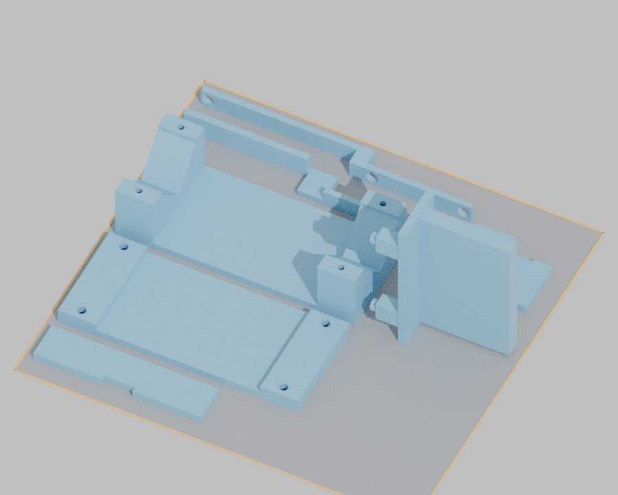
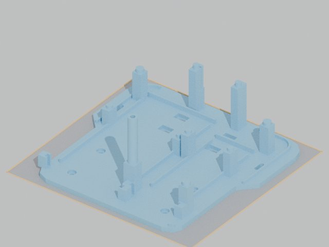
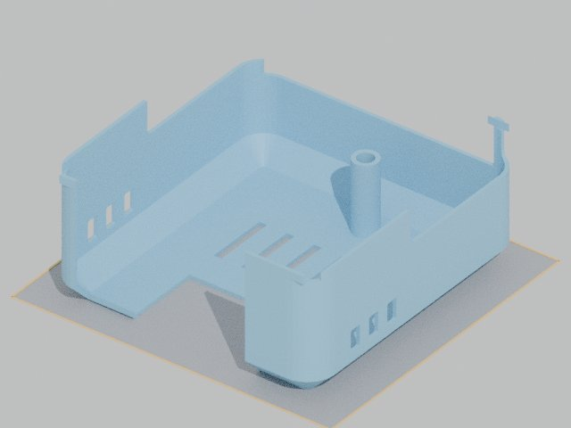
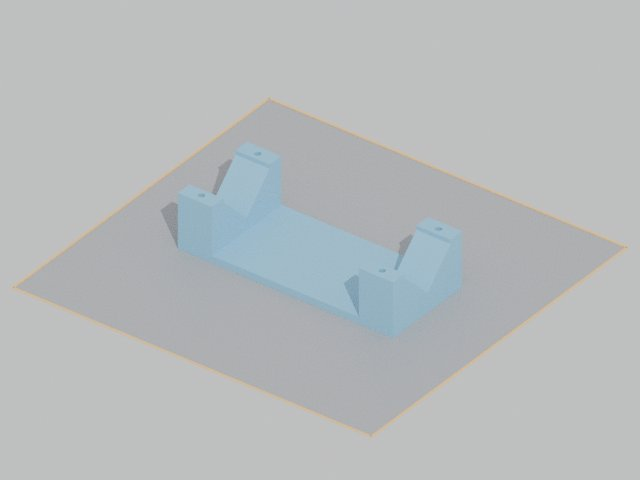
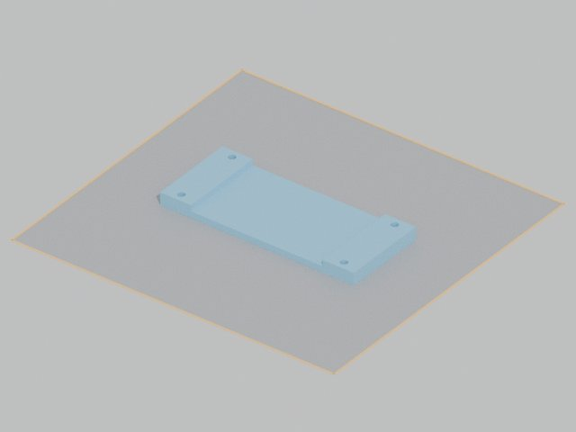
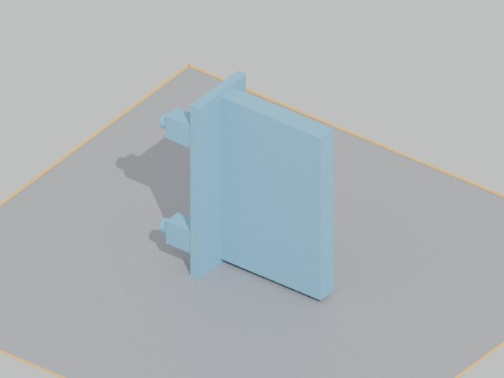
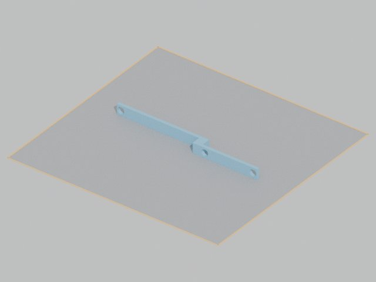
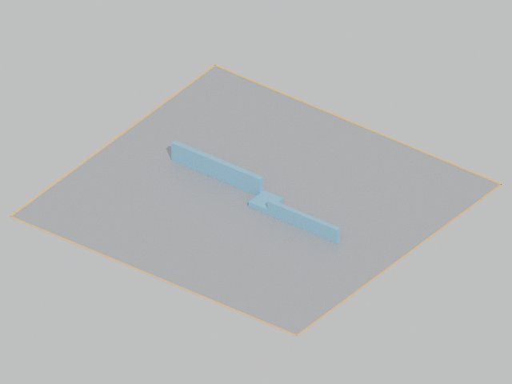

3D 출력 가이드
부품 10개를 파일 4개로 나눠 뽑습니다.
10개출력 부품
4번출력 횟수
약 36시간전체 예상
약 480g필라멘트 (PLA)
수업 자료와 다른 점 (확인 필요)
- 자료: "나사 4mm면 구멍 5mm". 이 설계는 볼트를 출력물에 직접 박는 방식이라 구멍이 볼트보다 작음 (M4 → 3.4mm, M6 → 5mm). 너트를 쓰려면 구멍을 키워야 함
- 자료: 조립 부분은 1mm 넉넉하게. 이 설계의 핀 구멍은 0.5mm 여유 → 빡빡하면 드릴·사포로 넓히기
- 예약 시간은 평일 9~18시. 10시간 넘는 출력(출력2·4)은 담당 선생님께 확인
0 처음 출력하기 (수업 자료 순서)
교수님 자료 「3D 프린터 모델링 및 제작」 p.36~52 순서입니다. 출력1 파일로 예를 듭니다.
예약
- 장비 예약전남대 계약학과 → 창의융합교육센터 → 장비활용 예약시스템 → 메이커스페이스B → 3DWOX 2X 예약. 평일 9시~18시만 들어갈 수 있음.
- 시간 넉넉히실제 시간은 프로그램 예상보다 길 수 있음. 출력2(약 10시간)·출력4(약 12시간)는 하루 안에 안 끝날 수 있어 담당 선생님께 먼저 확인.
내 컴퓨터에서 (3DWOX Desktop)
- 설치3dprinter.sindoh.com → 지원 → 다운로드에서 3DWOX Desktop 설치.
- 모드 → 고급 모드설정을 다 보려면 고급 모드로.
- 설정 → 프린터 설정 → 3DWOX 2X 선택 → 확인출력판 228×200mm.
- 파일 → 모델 불러오기
1_출력파일_v6.3의출력1_작은부품7개_한판.stl. 가운데가 아니면 모델 오른쪽 클릭 → 베드 가운데로 이동. - 회전하지 않기방향은 이미 맞춰 둠. 분석 → 최적 출력 방향은 누르지 않기 (부품 방향이 바뀜).
- SETTINGS → 서포트생성 위치 모든 곳, 구조 지그재그 (자료 기본값). 채움 20%.
- 레이어 뷰어로 확인하늘색 = 서포트 생기는 곳. 예상 시간도 여기서 봄.
- 카트리지 선택오른쪽 위 표시에서 프린터에 들어 있는 카트리지 (1) 또는 (2) 고르기.
- 파일 → G-code 저장하기 → USB에 담기파일 이름에 출력1~4 번호가 보이게.
프린터에서
- USB 꽂고 G-code 파일 선택 → 출력"출력물 제거 확인"이 나오면 베드가 비었는지 보고 확인.
- 온도·필라멘트 확인200~202℃가 되면 시작. 화면의 칸이 적으면 필라멘트가 얼마 없음.
- 첫 층 지켜보기필라멘트가 베드에 붙어서 나오는지 확인. USB 챙기기.
- 끝나면 장갑 끼고 떼기"출력물 제거"가 나오면 문 열고 파란 베드를 떼어(손잡이 아래쪽) 휘어서 떼기. 너무 세게 하면 베드에 구멍. 오래 두면 잘 안 떨어짐. 베드 제자리 → 확인.
- 래프트·서포트 제거바닥의 래프트와 서포트를 장갑 끼고 도구로 제거.
- 베드가 안 붙을 때설정 → 베드 레벨링 → 안내대로 스크류 돌리기.
1 파일 위치
- PC 폴더:
Documents\Codex\autonomous-car\1_출력파일_v6.3 - 출력1~4 파일 4개만 순서대로 뽑으면 끝
- 부품 하나만 다시 뽑을 때:
개별부품_다시뽑을때폴더 - 방향은 이미 맞춰 둠. 돌리지 말고 그대로
2 공통 설정
| 항목 | 값 | 이유 |
|---|---|---|
| 재료 | PLA | 잘 안 휨 |
| 층 높이 | 0.2 mm | 보통 품질 |
| 채움(Infill) | 20 % | 충분히 단단함 |
| 벽(Shell) | 4줄 (1.6 mm) | 볼트가 구멍에 직접 박힘 |
| 서포트 | 모든 곳 · 지그재그 | 수업 자료 기본값. 레이어 뷰어로 확인 |
| 바닥 접착 | 기본(래프트) 그대로 | 자료에 따로 바꾸라는 말 없음. 들뜨면 브림 |
| 크기 | 100 % | 볼트 구멍 크기가 맞아야 함 |
3 출력 순서
작은 부품부터 뽑아서 먼저 끼워 봅니다.

1작은 부품 한 판
약 9시간
- 출력1_작은부품7개_한판.stl
P06 · P07 · P09 · P04 · P14 2개 · P15가 이미 한 판에 배치됨
- 파일 1개만 열면 끝. 7개가 이미 제자리에 놓여 있음 (199×179mm). 하나씩 넣거나 옮기지 않기
- 출력판을 앞에서 볼 때 배치:
- 맨 뒤 줄: P04 가로대 (긴 막대, 가운데 꺾임)
- 그 앞: P15 보드 뒤 막대 (긴 막대)
- 가운데 왼쪽: P06 모터 받침 (U자, 가장 큼)
- 그 앞 왼쪽: P07 모터 하판 (납작한 판)
- 맨 앞 왼쪽: P14 잠금판 (보조배터리) (얇은 판)
- 오른쪽 위: P14 잠금판 (리포) (작은 통)
- 오른쪽 가운데: P09 카메라 받침 (옆으로 누운 판, 가장 높음 78mm)
- P07은 눕혀서 (구멍이 위아래로). 브림 필요 없음
- P09 카메라 받침만 옆으로 누움. 핀 아래 서포트 조금
- 뽑으면 모터를 받침에 끼워 보기
- 잘 안 되면 여기서 멈추고 알려 주기

2P01 바닥판
약 9시간 40분
- 출력2_P01_바닥판.stl
- 출력판에 꽉 참 (190×185)
- 시작 전에 출력판 깨끗이
- 첫 층이 잘 붙는지 10분 지켜보기
- 기둥이 키 큼 (84mm). 흔들림 없나 보기

3P02 선반
약 5시간 20분
- 출력3_P02_선반.stl
- 레일 위 턱 밑에 서포트 조금
- 뽑은 뒤 서포트 깨끗이 떼기

4P10 덮개
약 12시간 (가장 김)
- 출력4_P10_덮개.stl
- 밤에 걸어 두기 좋음
- 모서리가 들뜨면 브림 추가
- 뒤집힌 모양 그대로 (지붕이 바닥)
4 뽑는 방법
- 3DWOX Desktop 열기 → 고급 모드 → 프린터 3DWOX 2X
- 출력 파일 1개 불러오기
- 크기 100% 확인. 회전하지 않기
- 2번 설정 넣기
- 슬라이스 → 예상 시간·필라멘트 확인
- 출력판 닦고 출력 시작
- 첫 층 10분 지켜보기
- 다 식은 뒤 떼기 (뜨거울 때 떼면 휨)
- 서포트·브림 떼고 확인표 보기
5 전체 목록
한 부품만 다시 뽑을 때 쓰는 파일입니다 (개별부품_다시뽑을때).
| 출력 모습 | 파일 이름 | 크기 (mm) | 시간 | 무게 | 뽑은 뒤 확인 |
|---|---|---|---|---|---|
| P01_한장바닥판_190x185x5.stl | 190×185×84 | 9시간 40분 | 132 g | 기둥 곧게 섰나 · 핀 온전한가 | |
| P02_분리선반_150x130x4.stl | 159×138×30 | 5시간 20분 | 72 g | 레일 위 턱 온전한가 |
| P10_들어올림덮개_v5_1.stl | 175×183×82 | 12시간 | 164 g | 벽에 구멍 없나 · 볼트 구멍 뚫렸나 | |
 | P06_모터받침_일체.stl | 126×54×32 | 3시간 | 40 g | V홈 매끈한가 |
 | P07_모터하판_일체.stl | 126×54×8 | 1시간 40분 | 23 g | 볼트 구멍 4개 뚫렸나 |
 | P09_카메라_받침_일체.stl | 67×30×78 | 2시간 20분 | 26 g | 핀 2개 온전한가 |
 | P04_배터리_고정가로대_일체.stl | 146×12×10 | 30분 | 6 g | 핀 구멍 4개 |
 | P14_BANK_뒤잠금판.stl | 88×20×4 | 20분 | 5 g | 홈에 꽂아 보기 |
 | P14_LIPO_뒤잠금판.stl | 56×28×18 | 30분 | 6 g | 홈에 꽂아 보기 |
 | P15_보드_뒤막대.stl | 130×15×12 | 30분 | 6 g | 홈에 꽂아 보기 |
6 실패할 때
| 증상 | 해결 |
|---|---|
| 모서리가 들뜸 | 출력판 닦기 · 브림 넣기 · 문 닫고 출력 |
| 첫 층이 안 붙음 | 출력판 높이 맞추기(캘리브레이션) 후 다시 |
| 볼트 구멍이 빡빡함 | 볼트를 천천히 돌려 넣기. 너무 세면 드릴 Ø3.5(M4)·Ø5(M6) |
| 핀이 안 들어감 | 핀 겉을 사포로 살짝 |
| 핀·기둥이 부러짐 | 그 부품만 다시 출력. 기록 남기기 |